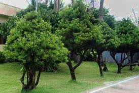
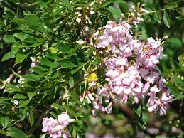

Vuyavuy Palm
(Phoenix hanceana var. philippinensis)
(Phoenix hanceana var. philippinensis)

Arius
(Podocarpus costalis)
(Podocarpus costalis)
Philippine Lily
(Lilium philippinense)
(Lilium philippinense)
Vuhuan
(Diospyros philippinensis)
(Diospyros philippinensis)
Riwas
(Lycopodiella cernua)
(Lycopodiella cernua)
Valayvayan
(Selaginella tamariscina)
(Selaginella tamariscina)

Kanarem
(Diospyros maritima)
(Diospyros maritima)
Karorotong
(Argemone mexicana)
(Argemone mexicana)
Katawa
(Ricinus communis)
(Ricinus communis)
Kabaka-baka
(Centella asiatica)
(Centella asiatica)
Buntot Pakpak
(Hibiscus tiliaceus)
(Hibiscus tiliaceus)
Batanes Fern
(Cyathea batanensis)
(Cyathea batanensis)
Tinabuan Fern
(Nephrolepis exaltata)
(Nephrolepis exaltata)

Kakawate
(Gliricidia sepium)
(Gliricidia sepium)
Bungang Hari
(Ixora coccinea)
(Ixora coccinea)
Banig Grass
(Scleria spp.)
(Scleria spp.)
Tanglad
(Cymbopogon citratus)
(Cymbopogon citratus)
Dagat ng Silver
(Nymphaea nouchali)
(Nymphaea nouchali)
Ukon Orchid
(Dendrobium ukon)
(Dendrobium ukon)